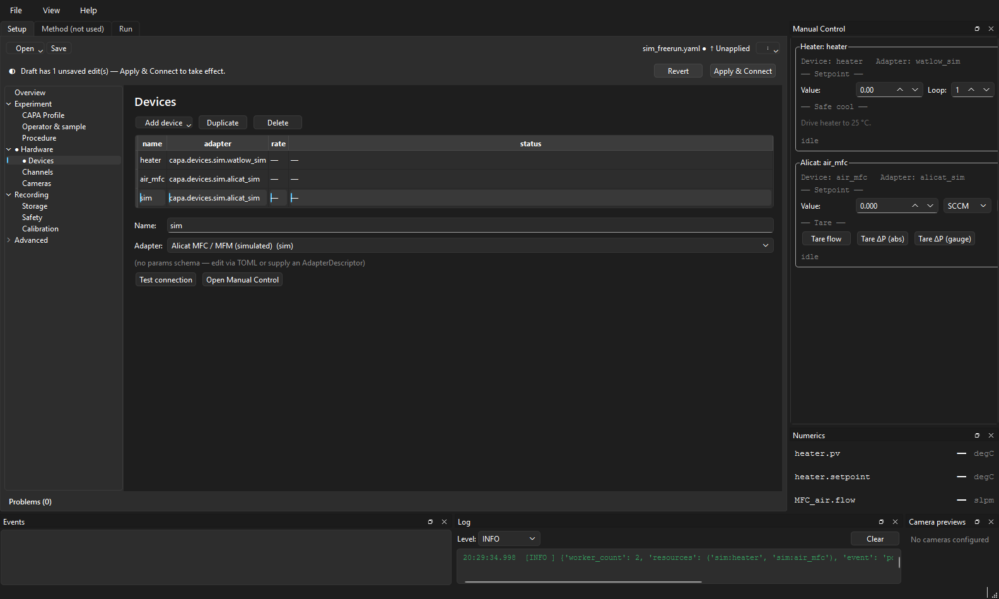
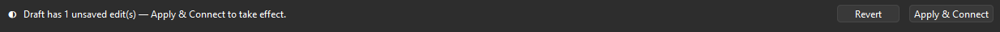
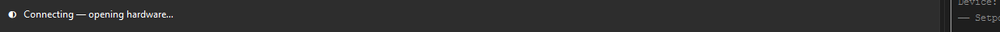
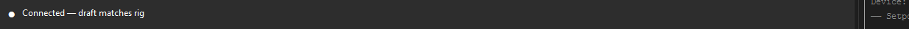
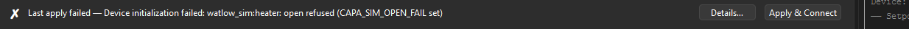
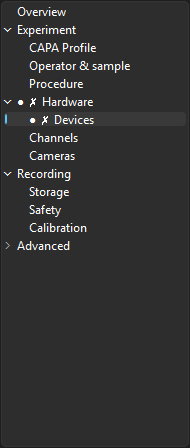
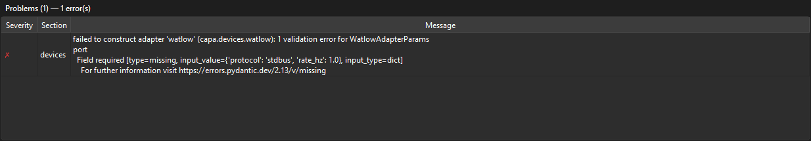
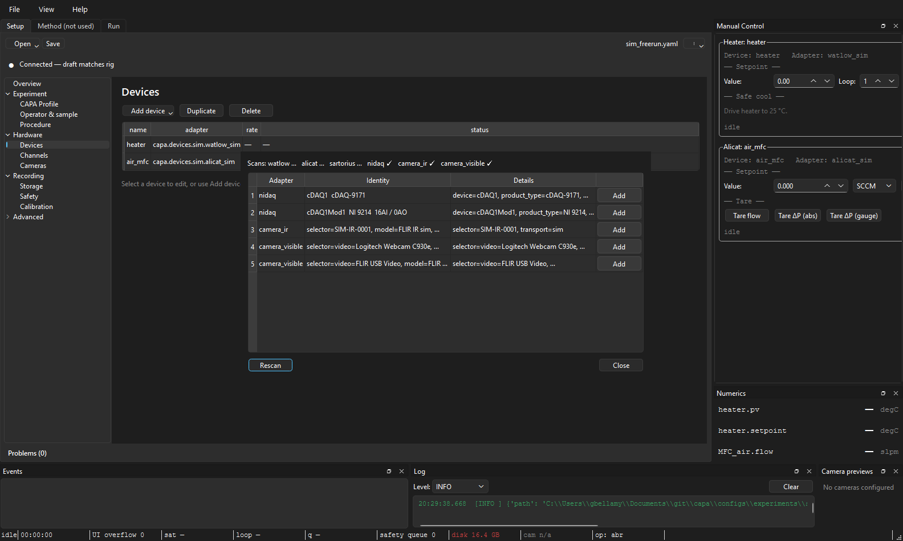
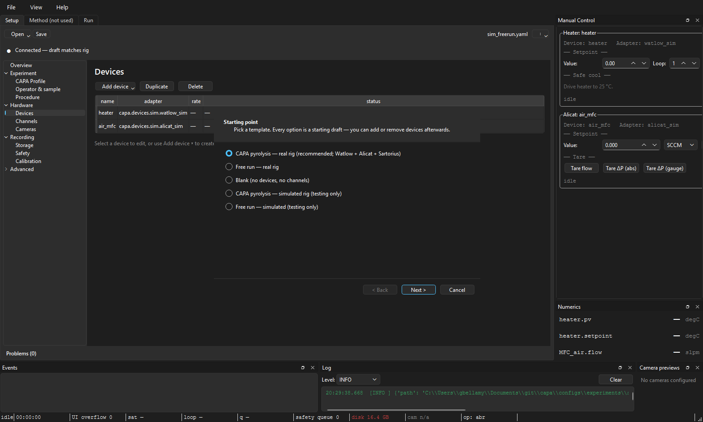

The Setup tab¶
Audience: operators and config authors. Scope: every panel of the Setup tab — outline, problems, sections, connection strip, and the four dialogs (discovery, calibration plot, calibration diff, apply-to-channels) that surface from it.
This is the largest surface in the app. Every other operator page (the Run tab, manual controls, first real run) links back to a panel here — keep this page open in a second window while you read them.
Anatomy¶
┌────────────────────────────────────────────────────────────────────────┐
│ [Open ▾] [Save] untitled / sim_freerun.yaml [⋮ overflow] │ ← toolbar
├────────────────────────────────────────────────────────────────────────┤
│ ● Draft has 3 unsaved edit(s) — Apply & Connect to take effect. │ ← connection strip
│ [Revert] [Apply & Connect]
├──────────────┬─────────────────────────────────────────────────────────┤
│ Overview │ │
│ Experiment │ │
│ CAPA Profile│ Section editor │ ← main editor
│ Operator… │ (whichever outline row is selected) │ (scrolls)
│ Procedure │ │
│ ● Hardware │ │
│ ● Devices │ │
│ Channels │ │
│ Cameras │ │
│ Recording │ │
│ Storage │ │
│ Safety │ │
│ Calibration │ │
│ Advanced │ │
│ Files │ │
├──────────────┴─────────────────────────────────────────────────────────┤
│ Problems (2) ✗ channels[heater_pv] missing binding → Channels │ ← problems panel
│ ⚠ cameras[ir]: device id not found → Cameras │
└────────────────────────────────────────────────────────────────────────┘

Four regions, each documented below in the order you encounter them:
- Toolbar — Open / Save / Save As / Validate / Scan / Verify / Revert.
- Connection strip — the persistent rig-connectivity surface.
- Outline (left) — section navigator with status markers.
- Section editor (centre) — the field forms for the selected row.
- Problems panel (bottom) — validation errors and warnings, with click-to-jump.
Toolbar¶
| Button / menu item | What it does | Disabled when |
|---|---|---|
| Open ▾ → New from template… | Launch the Setup wizard for a greenfield config | a run is active |
| Open ▾ → Open file… | File picker for *.yaml / *.toml experiment files |
a run is active |
| Open ▾ → Recent | Submenu of recently opened configs (capped at 10) | — |
| Save | Write the current draft back to its source path | source is untitled |
| ⋮ → Save As… | Pick a new path; supports converting between inline and external method/hardware | — |
| ⋮ → Validate | Run all four offline validation layers (no hardware touched) | — |
| ⋮ → Scan for devices | Open the Discovery dialog | a run is active |
| ⋮ → Verify connection | Layer-5 live handshake against the hardware described in the draft | a run is active |
| ⋮ → Revert draft | Discard unsaved edits and re-read from disk | draft is clean |
Apply & Connect does not live in the toolbar — it lives on the
connection strip where the operator looks for "is
the rig live?". Putting it on both would split attention.
The source label between the primary actions and the overflow shows
either the file path or untitled — Save without a path goes through
Save As automatically.
Connection strip¶
The strip lives directly under the toolbar and is always visible. It answers exactly one question — is the rig live, and if not, what should I do next? — with one coloured dot and one sentence.
The seven states¶
The strip resolves to one of these from a snapshot of its inputs (draft status, controller signals, in-flight flags). They're priority-ordered: the first that matches wins.
| State | Glyph / colour | Message | When it shows |
|---|---|---|---|
| FROZEN | 🔒 purple | "Run in progress — config locked until the run completes." | A run is active. Edits and Apply are refused. |
| CONNECTING | ◐ blue | "Connecting — opening hardware…" | Apply & Connect is mid-flight. |
| CHECKING | ◐ indigo | "Verifying connection — read-only handshake in progress…" | Verify connection is mid-flight. |
| FAILED | ✗ red | "Last apply failed — detail." | The most recent Apply & Connect failed. Stays until you edit the draft or retry. |
| CONNECTED | ● green | "Connected — draft matches rig." | Hardware is ready, no unsaved edits. |
| UNAPPLIED | ◐ amber | "Draft has N unsaved edit(s) — Apply & Connect to take effect." | Hardware is ready (or no apply has succeeded yet), but the draft has diverged. |
| IDLE | ○ gray | "No config loaded" | App just opened. |
The strings above are literal — searchable across the docs. If you see
something different, the code has changed; the source of truth is
setup_connection_strip.py.
The six most common surfaces, head-on:
IDLE — no config loaded yet:
UNAPPLIED — draft has unsaved edits:

CONNECTING — Apply & Connect is mid-flight:

CONNECTED — happy path:

FAILED — Apply threw; Details… surfaces the full error:

FROZEN — run in progress, config locked:
Buttons on the strip¶
| Button | Visible in state | What it does |
|---|---|---|
| Open config… | IDLE | File picker; same as toolbar Open file. |
| New setup | IDLE | Launches the wizard. |
| Details… | FAILED | Modal with the full error from the last apply. |
| Revert | UNAPPLIED | Re-read the source file, discarding edits. |
| Apply && Connect | UNAPPLIED, FAILED | Compose draft → validate → open hardware → start background acquisition. Disabled when the draft has validation errors — fix them in the Problems panel first. |
Apply & Connect is the only path that opens hardware. Toolbar Validate and Verify connection never open or close worker connections — they only inspect.
Outline¶
The left column lists every editable section in a fixed tree:
Overview
Experiment
CAPA Profile
Operator & sample
Procedure
Hardware
Devices
Channels
Cameras
Recording
Storage
Safety
Calibration
Advanced
Files
Each row carries up to two status markers, which can stack as ●⚠ or
●✗:
| Marker | Meaning |
|---|---|
| (none) | clean, validated |
● |
dirty — edits not yet saved to disk |
⚠ |
warnings only |
✗ |
at least one error |
Markers roll up: if Channels has an error, the Hardware parent
also shows ✗. This means the operator can scan the outline once and
know which subtree to drill into.

The tree mirrors the operator's three questions — what experiment, what hardware, where does data go — rather than the underlying Pydantic shape. Advanced → Files is collapsed by default and holds the inline-vs-external method/hardware-reference editor that most operators never touch.
Section editor¶
The centre pane shows the form for whichever outline row is selected. Every section is scroll-wrapped so tall panes (CAPA Profile, Channels) never spill off-screen on a 1080p display.
Overview¶
Read-only glance — what's loaded, what's dirty, what to do next. The "Edit" buttons on the Hardware glance jump to the matching child section in the outline.
Experiment → CAPA Profile¶
The cone-calorimeter scientific metadata: external flux, sample mass, distance, atmosphere, holder. See CAPA profile fields for the per-field reference. This is the section to fill in for a real run — most of it is irrelevant for a simulator tour.
Experiment → Operator & sample¶
Free-text fields: operator id (goes to the status bar's op pill), sample
id, notes. The operator id is stamped into every event the run records,
so changing it mid-day matters for the audit trail.
Experiment → Procedure¶
Pick which procedure plugin drives the run — free run, recipe runner, heat-flux tune, etc. See What is a procedure. The choice gates which other tabs are useful: a free-run procedure leaves the Method tab empty; the recipe runner expects a method.
Hardware → Devices¶
The device table. Add a Watlow, Alicat, NI-DAQ, Sartorius row; pick a
transport (com_port=COM5, host=192.168.1.10, etc.). The Discovery
dialog can populate this for you — see below.
Right-click → Open manual control jumps to the Manual tab with that
device's card surfaced. The Setup tab forwards this through the
deviceActionRequested signal.
Hardware → Channels¶
The channel table — the bridge between "device A reports parameter P" and
"my data column is called heater_pv." Each channel row points at a
device + parameter + (optional) instance via a
binding. The
Apply-to-channels dialog is invoked from a
button on this section.
Hardware → Cameras¶
Visible-light and IR cameras: the camera table (id, source kind, resolution / fps / codec) plus the per-camera target channel for any derived scalars (e.g. mean IR temperature).
Recording → Storage¶
Storage policy fields: the bundle-root hint plus advanced IPC/Parquet placeholders. Most operators leave this at the default — the workspace layout page covers re-rooting onto a fast drive.
Recording → Safety¶
Per-channel alarm bands and the per-fault disposition (warn / abort /
safe_shutdown). The safety system reads this on every sample; getting
it wrong is a real-money mistake on a real rig.
Recording → Calibration¶
Glance view of the currently-applied calibration set per channel — read-only here. Edits happen on the Channels section's per-row calibration popover, which opens the calibration plot.
Advanced → Files¶
For configs split across files: pick which fields are inline in the
experiment YAML vs. referenced by path = "...". Power-user only; the
wizard's output is always inline.
Problems panel¶
The bottom strip lists every problem from the most recent validate. Each
row shows the severity glyph (✗ error, ⚠ warning), a sentence, and a
clickable section name that jumps the outline to the offending row.

Validation runs automatically on every keystroke (200 ms debounce) and covers four offline layers:
- Schema — Pydantic parsing. Wrong types, missing required fields.
- Semantic — cross-field rules (e.g. setpoint > 0, device id known).
- Hardcoded — invariants that don't depend on user config.
- Known catalogue — registered procedures, profiles, devices.
The fifth layer — live handshake with the hardware — runs only when you click toolbar Verify connection or the connection strip's Apply & Connect. The Problems panel never opens a serial port on its own.
A draft with errors disables both Save (some configs) and Apply & Connect — the buttons' tooltips point you back here.
Dialogs¶
Discovery dialog¶
Toolbar ⋮ → Scan for devices opens a modal that scans the bus families capa knows about (Watlow Modbus, Alicat serial, NI-DAQ chassis, USB cameras). Pick the devices you want, map their roles (heater, mfc, etc.), and apply — the dialog writes rows back into the Devices section.

A rescan cancels any previous scan task before starting (anti-race), so clicking the button twice quickly is safe.
Discovery is disabled during runs because it would have to open serial buses the worker pool owns.
Calibration plot dialog¶
From the Channels section, click the calibration column for a row to open the plot. It shows the raw-vs-engineering curve for the channel's binding, with the draft's calibration overlaid on the saved set so you can see what a pending edit does. Drag a knot, paste a CSV table, or import from a calibration set on disk.
Calibration set diff dialog¶
If the draft's calibration differs from what's saved in the calibration set, the diff dialog spells out which channels changed and by how much. Surfaces from the calibration plot's "Save back to set…" flow and from Apply & Connect when it detects a drift.
Apply-to-channels dialog¶
Edits a binding-or-calibration value on one channel, then opens this dialog to mass-apply the same value to every channel matching a filter (same device, same parameter family, etc.). Useful when you're wiring twelve thermocouples to the same NI-DAQ module with the same calibration — set one, propagate to all.
Save As dialog¶
Standard file picker plus a checkbox for "extract method/hardware to external files" — converts an inline-everything config into the file-per-piece layout that's easier to diff in git. Inverse conversion is also offered when you Save As an external config to a new path.
The Setup wizard¶
Open ▾ → New from template… launches a one-screen wizard that asks the bare minimum for a runnable config: procedure, profile, primary heater, primary MFC, sample id. The wizard-produced draft is marked unapplied on completion so the Apply & Connect button lights up immediately — the wizard's whole point is "open this and start running."

How edits flow through the tab¶
The Setup tab owns a SetupDraft. Every section edit emits a patch that
the draft applies; the draft's bookkeeping decides which sections are
dirty and which rows in the Problems panel are still relevant.
When you click Apply & Connect:
- The current draft is composed with the Method tab's in-memory method buffer (so a method-edit-then-Apply works without saving the method first).
- The composed
ExperimentConfigis re-validated end-to-end. - The tab emits
applyRequested(config, source_path)to the main window. - The main window drives
RunController.set_active_config(...), which opens (or hot-reloads) the worker pool. - The connection strip flips CONNECTING → CONNECTED on success, or CONNECTING → FAILED on a thrown error.
See daily workflow for hot-vs-cold reload semantics during this step.
See also: Configuration overview, Channel bindings, Validation and problems, Status bar guide, Runtime architecture.